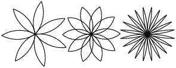

Chapitre 4
Cas d’étude: conception d’interface
Ce chapitre présente une cas d’étude qui illustre un processus de conception de fonctions qui travaillent ensemble.
Il présente la module tortue, qui vous permet de créer des images à l’aide de graphiques tortue. La module tortue est inclus dans la plupart des installations Python, mais si vous utilisez Python en utilisant PythonAnywhere, vous ne pourrez pas exécuter les exemples de tortue (au moins vous ne pouviez pas quand j’ai écrit ceci). Si vous avez déjà installé Python sur votre ordinateur, vous devriez pouvoir exécuter les exemples. Sinon, c’est le bon moment pour l’installer. J’ai posté des instructions sur http://tinyurl.com/thinkpython2e. Des exemples de code de ce chapitre sont disponibles sur http://thinkpython2.com/code/polygon.py.
4.1 La module tortue
Pour vérifier si vous avez la module tortue, ouvrez l’interpréteur Python et tapez
>>> import turtle
>>> bob = turtle.Turtle()
Lorsque vous exécutez ce code, il doit créer une nouvelle fenêtre avec une petite flèche qui représente la tortue. Fermez la fenêtre. Créez un fichier nommé mypolygon.py et tapez le code suivant:
import turtle
bob = turtle.Turtle()
print(bob)
turtle.mainloop()
La module turtle (avec un ‘t’ minuscule) fournit une fonction appelée Turtle (avec un ‘T’ majuscule) qui crée un objet Turtle, que nous assignons à une variable nommée bob. print bob affiche quelque chose comme:
<turtle.Turtle object at 0xb7bfbf4c>
Cela signifie que bob fait référence à un objet de type Turtle tel que défini dans la tortue de module.
mainloop indique à la fenêtre d’attendre que l’utilisateur fasse quelque chose, bien que dans ce cas il n’y a pas grand chose à faire pour l’utilisateur, sauf fermer la fenêtre.
Une fois que vous créez une tortue, vous pouvez appeler une méthode pour la déplacer dans la fenêtre. Une méthode est similaire à une fonction, mais utilise une syntaxe légèrement différente. Par exemple, pour déplacer la tortue
vers l’avant:
bob.fd(100)
La méthode fd est associée à l’objet tortue que nous appelons bob. L’appel d’une méthode est
comme faire une demande: vous demandez à Bob d’avancer.
L’argument de fd étant une distance en pixels, la taille réelle dépend de votre affichage.
Les autres méthodes que vous pouvez appeler sur une tortue sont bk pour reculer, lt pour tourner à gauche et rt virage à droite. L’argument pour lt et rt est un angle en degrés.
En outre, chaque tortue tient un stylo, qui est soit en bas soit en haut; si le stylo touche la page, la tortue laisse une trace quand il bouge. Les méthodes pu et pd représentent “pen up” et “pen down”.
Pour dessiner un angle droit, ajoutez ces lignes au programme (après avoir créé bob et avant d’appeler la
boucle principale):
bob.fd(100)
bob.lt(90)
bob.fd(100)
Lorsque vous exécutez ce programme, vous devriez voir Bob se déplacer vers l’est puis vers le nord, laissant deux segments de ligne derrière. Modifiez maintenant le programme pour dessiner un carré. Ne continuez pas tant que vous ne l’avez pas fait fonctionner!
4.2 Répétition simple
Les chances sont que vous avez écrit quelque chose comme ceci:
bob.fd(100)
bob.lt(90)
bob.fd(100)
bob.lt(90)
bob.fd(100)
bob.lt(90)
bob.fd(100)
Nous pouvons faire la même chose de manière plus concise avec une déclaration. Ajouter cet exemple à mypolygon.py et lancez-le à nouveau:
for i in range(4):
print('Hello!')
Vous devriez voir quelque chose comme ceci:
Hello!
Hello!
Hello!
Hello!
C’est l’utilisation la plus simple de la déclaration for; nous verrons plus tard. Mais cela devrait être de quoi vous permettre de réécrire votre programme de dessin en carré. Ne continuez pas jusqu’à ce que vous fassiez. Voici une déclaration qui dessine un carré:
for i in range(4):
bob.fd(100)
bob.lt(90)
La syntaxe d’une instruction for est similaire à une définition de fonction. Il a un en-tête qui se termine avec un colon et un corps en retrait. Le corps peut contenir n’importe quel nombre d’instructions.
Un déclaration for est également appelé une boucle parce que le flux d’exécution traverse le corps puis retourne au sommet. Dans ce cas, il court le corps quatre fois. Cette version est en fait un peu différente du précédent code de dessin car fait un autre tour après avoir dessiné le dernier côté de la place. Le tour supplémentaire prend plus temps, mais cela simplifie le code si nous faisons la même chose à chaque fois dans la boucle. Ce version la a également pour effet de laisser la tortue dans la position de départ, face à la direction de départ.
4.3 Exercices
Ce qui suit est une série d’exercices utilisant TurtleWorld. Ils sont censés êtres amusants, mais ils ont un point aussi. Pendant que vous y travaillez, réfléchissez à la question. Les sections suivantes proposent des solutions aux exercices, ne regardez donc pas avant d’avoir terminé (ou au moins essayé).
-
Ecrivez une fonction appelée carré qui prend un paramètre nommé t, qui est une tortue. Il doit utiliser la tortue pour dessiner un carré. Écrivez un appel de fonction qui passe Bob en argument à square, puis exécutez le programme à nouveau.
-
Ajoutez un autre paramètre, nommé length, au carré. Modifier le corps si long de la les côtés est la longueur, puis modifiez l’appel de la fonction pour fournir un second argument. Executer le programme à nouveau. Testez votre programme avec une plage de valeurs de longueur.
-
Faites une copie du carré et changez le nom en polygone. Ajouter un autre paramètre nommée n et modifie le corps pour dessiner un polygone régulier à n côtés. Indice: le les angles extérieurs d’un polygone régulier à n côtés sont de
360 / ndegrés. -
Écrivez une fonction appelée cercle qui prend comme paramètres une tortue, t et rayon, et qui trace un cercle approximatif en appelant le polygone avec une longueur appropriée et nombre de côtés. Testez votre fonction avec une plage de valeurs de r. Astuce: déterminez la circonférence du cercle et assurez-vous que cette
longueur * n = circonference. -
Faire une version plus générale du cercle appelé arc qui prend un paramètre supplémentaire angle, qui détermine quelle fraction de cercle dessiner. l’angle est en unités de degrés, Ainsi, lorsque angle = 360, l’arc doit dessiner un cercle complet.
4.4 Encapsulation
Le premier exercice vous demande de mettre votre code de dessin carré dans une définition de fonction et puis appelez la fonction, en passant la tortue en paramètre. Voici une solution:
def square(t):
for i in range(4):
t.fd(100)
t.lt(90)
square(bob)
Les instructions les plus internes, fd et lt, sont en retrait deux fois pour montrer qu’elles sont à l’intérieur du
for loop, qui se trouve dans la définition de la fonction. La ligne suivante, square(bob), est alignée avec la marge de gauche, qui indique la fin de la boucle for et la définition de la fonction.
À l’intérieur de la fonction, t fait référence au même bob tortue, donc t.lt(90) a le même effet que
bob.lt(90). Dans ce cas, pourquoi ne pas appeler le paramètre bob? L’idée est que t peut être n’importe quel
tortue, pas seulement bob, vous pouvez donc créer une deuxième tortue et la passer en argument
alice = turtle.Turtle()
square(alice)
L’encapsulation d’un morceau de code dans une fonction est appelée encapsulation. Un des avantages de l’encapsulation consiste à attacher un nom au code, qui sert de type de documentation. Un autre avantage est que si vous réutilisez le code, il est plus concis d’appeler une fonction deux fois que de copier et coller le corps!
4.5 Généralisation
L’étape suivante consiste à ajouter un paramètre de longueur à square. Voici une solution:
def square(t, length):
for i in range(4):
t.fd(length)
t.lt(90)
square(bob, 100)
L’ajout d’un paramètre à une fonction s’appelle la généralisation car elle fait la fonction plus général: dans la version précédente, le carré a toujours la même taille; dans cette version c’est peut être n’importe quelle taille. L’étape suivante est également une généralisation. Au lieu de dessiner des carrés, le polygone dessine des polygones régulière avec un nombre quelconque de côtés. Voici une solution:
def polygon(t, n, length):
angle = 360 / n
for i in range(n):
t.fd(length)
t.lt(angle)
polygon(bob, 7, 70)
Cet exemple dessine un polygone à sept côtés avec une longueur de côté 70.
Si vous utilisez Python 2, la valeur de l’angle peut être désactivée en raison de la division entière. Une
solution simple est de calculer angle = 360.0 / n. Le numérateur étant un nombre à virgule flottante, le résultat est un nombre à virgule flottante.
Lorsqu’une fonction a plus que quelques arguments numériques, il est facile d’oublier ce qu’ils sont,
ou dans quel ordre ils devraient être. Dans ce cas, il est souvent utile d’inclure les noms de
les paramètres de la liste d’arguments:
polygon(bob, n=7, length=70)
Ceux-ci sont appelés des arguments de mots-clés car ils incluent les noms de paramètres en tant que “mots-clés” (à ne pas confondre avec les mots-clés Python comme while et def). Cette syntaxe rend le programme plus lisible. C’est aussi un rappel sur la façon dont les arguments et paramètres fonctionnent: lorsque vous appelez une fonction, les arguments sont affectés aux paramètres.
4.6 Design d’interface
L’étape suivante consiste à écrire le cercle, qui prend un rayon, r, en tant que paramètre. Voici un simple solution qui utilise un polygone pour dessiner un polygone à 50 côtés:
import math
def circle(t, r):
circumference = 2 * math.pi * r
n = 50
length = circumference / n
polygon(t, n, length)
La première ligne calcule la circonférence d’un cercle de rayon r en utilisant la formule 2πr. Puisque nous utilisons math.pi, nous devons importer des mathématiques. Par convention, les instructions d’importation sont généralement au début du script.
n est le nombre de segments de droite dans notre approximation d’un cercle, donc la longueur est la longueur de chaque segment. Ainsi, le polygone dessine un polygone à 50 côtés qui se rapproche d’un cercle avec rayon r. Une des limites de cette solution est que n est une constante, ce qui signifie que pour de très grands cercles, les segments de ligne sont trop longs et pour les petits cercles, nous perdons du temps à dessiner très petit segments. Une solution consisterait à généraliser la fonction en prenant n comme paramètre. Cela donnerait à l’utilisateur (celui qui appelle le cercle) plus de contrôle, mais l’interface serait moins propre. L’interface d’une fonction est un résumé de son utilisation: quels sont les paramètres? Quelle la fonction fait-elle? Et quelle est la valeur de retour? Une interface est “propre” si elle permet au appelant à faire ce qu’il veut sans traiter les détails inutiles. Dans cet exemple, r appartient à l’interface car il spécifie le cercle à dessiner. n est moins approprié car cela concerne les détails de la façon dont le cercle doit être rendu. Plutôt que d’encombrer l’interface, il est préférable de choisir une valeur appropriée de n en fonction de la circonférence:
def circle(t, r):
circumference = 2 * math.pi * r
n = int(circumference / 3) + 3
length = circumference / n
polygon(t, n, length)
Maintenant, le nombre de segments est un entier proche de la circumference/3, donc la longueur de chaque le segment est d’environ 3, ce qui est assez petit pour que les cercles semblent bons, mais gros suffisamment pour être efficace et acceptable pour tout cercle de taille. L’ajout de 3 à n garantit que le polygone a au moins 3 côtés.
4.7 Refactoring
Lorsque j’ai écrit le cercle, j’ai pu réutiliser un polygone car un polygone à plusieurs côtés est un bon approximation d’un cercle. Mais l’arc n’est pas aussi coopératif; nous ne pouvons pas utiliser polygone ou cercle pour dessine un arc. Une alternative consiste à commencer par une copie du polygone et à le transformer en arc. Le résultat pourrait ressembler à ceci:
def arc(t, r, angle):
arc_length = 2 * math.pi * r * angle / 360
n = int(arc_length / 3) + 1
step_length = arc_length / n
step_angle = angle / n
for i in range(n):
t.fd(step_length)
t.lt(step_angle)
La seconde moitié de cette fonction ressemble à un polygone, mais nous ne pouvons pas réutiliser un polygone sans changer l’interface. On pourrait généraliser le polygone pour prendre un angle comme troisième argument, mais alors le polygone ne serait plus un nom approprié! Au lieu de cela, appelons le plus fonction générale polyligne:
def polyline(t, n, length, angle):
for i in range(n):
t.fd(length)
t.lt(angle)
Maintenant, nous pouvons réécrire le polygone et l’arc pour utiliser la polyligne:
def polygon(t, n, length):
angle = 360.0 / n
polyline(t, n, length, angle)
def arc(t, r, angle):
arc_length = 2 * math.pi * r * angle / 360
n = int(arc_length / 3) + 1
step_length = arc_length / n
step_angle = float(angle) / n
polyline(t, n, step_length, step_angle)
Enfin, nous pouvons réécrire le cercle pour utiliser l’arc:
def circle(t, r):
arc(t, r, 360)
Ce processus de réorganisation d’un programme pour améliorer les interfaces et faciliter la réutilisation du code est appelé refactoring. Dans ce cas, nous avons remarqué qu’il y avait un code similaire en arc et en polygone, donc nous avons “factorisé” en polyligne. Si nous avions prévu à l’avance, nous aurions peut-être écrit la polyligne d’abord et évité la refactorisation, mais souvent vous ne savez pas assez au début d’un projet pour concevoir toutes les interfaces. Une fois que vous commencez à coder, vous comprenez mieux le problème. Parfois, le refactoring est un signe que vous avez appris quelque chose.
4.8 Un plan de développement
Un plan de développement est un processus d’écriture de programmes. Le processus utilisé dans ce cas l’étude d’ “encapsulation et généralisation”. Les étapes de ce processus sont les suivantes:
-
Commencez par écrire un petit programme sans définition de fonction.
-
Une fois que le programme fonctionne, identifiez-en un élément cohérent, encapsulez le pièce dans une fonction et lui donner un nom.
-
Généraliser la fonction en ajoutant les paramètres appropriés.
-
Répétez les étapes 1 à 3 jusqu’à ce que vous ayez un ensemble de fonctions de travail. Copiez et collez le code pour éviter de retaper (et re-déboguer).
-
Recherchez les possibilités d’améliorer le programme en procédant à un remaniement. Par exemple, si vous avez un code similaire à plusieurs endroits, envisagez de le prendre en compte avec une fonction générale.
Ce processus a quelques inconvénients - nous verrons des alternatives plus tard - mais cela peut être utile si vous ne savez pas à l’avance comment diviser le programme en fonctions. Cette approche vous permet de concevoir au fur et à mesure.
4.9 docstring
Un docstring est une chaîne au début d’une fonction qui explique l’interface (“doc” est abréviation de “documentation”). Voici un exemple:
def polyline(t, n, length, angle):
"""Draws n line segments with the given length and
angle (in degrees) between them. t is a turtle.
"""
for i in range(n):
t.fd(length)
t.lt(angle)
Par convention, toutes les chaînes de caractères sont des chaînes entre guillemets, également appelées chaînes multilignes. car les triples guillemets permettent à la chaîne de s’étendre sur plusieurs lignes.
C’est concis, mais il contient l’information essentielle dont quelqu’un aurait besoin pour utiliser cette fonction. Il explique de manière concise ce que la fonction fait (sans entrer dans les détails de la façon dont il le fait). Il explique quel effet chaque paramètre a sur le comportement de la fonction et quel type chaque paramètre devrait être (si ce n’est pas évident). L’écriture de ce type de documentation est une partie importante de la conception de l’interface. Une interface bien conçue devrait être simple à expliquer; si vous avez du mal à en expliquer un de vos fonctions, peut-être l’interface pourrait être améliorée.
4.10 Le débogage
Une interface est comme un contrat entre une fonction et un appelant. L’appelant accepte de fournir certains paramètres et la fonction accepte de faire certains travaux. Par exemple, polyligne nécessite quatre arguments: t doit être une tortue; n doit être un entier; la longueur doit être un nombre positif; et l’angle doit être un nombre, ce qui est compris être en degrés. Ces exigences sont appelées conditions préalables car elles sont supposées être vraies avant la fonction commence à s’exécuter. Inversement, les conditions à la fin de la fonction sont des conditions postconduites. Les post-conditions incluent l’effet prévu de la fonction (comme dessiner une ligne segments) et tout effet secondaire (comme déplacer la tortue ou apporter d’autres modifications). Les conditions préalables sont la responsabilité de l’appelant. Si l’appelant viole une condition préalable (correctement documentée!) Et que la fonction ne fonctionne pas correctement, le bogue se trouve dans l’appelant, pas la fonction. Si les conditions préalables sont satisfaites et que les conditions de postconditions ne le sont pas, le bogue est dans la fonction. Si vos conditions préalables et postérieures sont claires, elles peuvent aider au débogage.
4.11 Glossaire
-
method: Fonction associée à un objet et appelée à l’aide de la notation par points.
-
loop: Partie d’un programme pouvant être exécutée à plusieurs reprises.
-
encapsulation: processus de transformation d’une séquence d’instructions en une définition de fonction.
-
généralisation: processus de remplacement de quelque chose d’inutile (comme un nombre) avec quelque chose de façon générale (comme une variable ou un paramètre).
-
keyword argument: argument qui inclut le nom du paramètre en tant que “mot-clé”.
-
interface: description de l’utilisation d’une fonction, y compris le nom et les descriptions de les arguments et la valeur de retour.
-
refactoring: Processus de modification d’un programme de travail pour améliorer les interfaces de fonction et d’autres qualités du code.
-
plan de développement: Un processus pour écrire des programmes.
-
docstring: Chaîne qui apparaît en haut d’une définition de fonction pour documenter l’interface de la fonction.
-
condition préalable: exigence qui doit être satisfaite par l’appelant avant le démarrage d’une fonction.
-
postcondition: Une exigence qui devrait être satisfaite par la fonction avant sa fin.
4.12 Exercices
Exercice 1
Téléchargez le code dans ce chapitre à partir de http://thinkpython2.com/code/polygon.py.
-
Dessinez un diagramme de pile qui montre l’état du programme pendant l’exécution du cercle (bob, rayon). Vous pouvez faire l’arithmétique à la main ou ajouter des instructions d’impression au code.
-
La version de l’arc de la section 4.7 n’est pas très précise car l’approximation linéaire de cercle est toujours en dehors du vrai cercle. En conséquence, la tortue se retrouve à quelques pixels de la bonne destination. Ma solution montre un moyen de réduire l’effet de cette erreur. Lis le code et voir si cela a du sens pour vous. Si vous dessinez un diagramme, vous pourriez voir comment cela fonctionne.

Exercice 2
Écrivez un ensemble de fonctions qui peut dessiner des fleurs comme dans la figure 4.1. Solution: http://thinkpython2.com/code/flower.py, nécessite également http://thinkpython2.com/code/polygon.py.

Exercice 3.
Ecrivez un ensemble de fonctions qui peut dessiner des formes comme dans la Figure 4.2. Solution: http://thinkpython2.com/code/pie.py.
Exercice 4.
Les lettres de l’alphabet peuvent être construites à partir d’un nombre modéré d’éléments de base, tels que des lignes verticales et horizontales et quelques courbes. Concevoir un alphabet qui peut être dessiné avec un nombre minimal d’éléments de base, puis écrivez les fonctions qui dessinent les lettres. Vous devriez écrire une fonction pour chaque lettre, avec les noms draw_a, draw_b, etc., et mettre votre fonctions dans un fichier nommé letters.py. Vous pouvez télécharger une “machine à écrire tortue” sur http://thinkpython2.com/code/typewriter.py pour vous aider à tester votre code.
Vous pouvez obtenir une solution à partir de http://thinkpython2.com/code/letters.py; il faut aussi avoir http://thinkpython2.com/code/polygon.py.
Exercice 5.
Lisez à propos des spirales sur http://en.wikipedia.org/wiki/Spiral; puis écrivez un programme qui dessine une spirale archimédienne (ou l’une des autres sortes). Solution: http://thinkpython2.com/code/spiral.py.